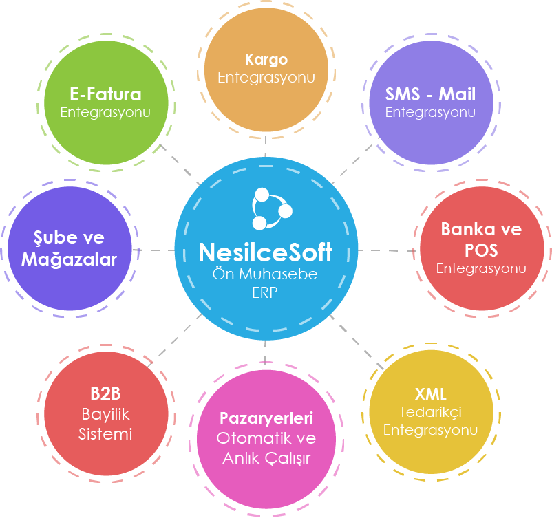

| İçerikler |
Temel Ön Muhasebe Ticari Yazılım
|
Dijital Muhasebe
|
Dijital Muhasebe CRM ERP
|
|
15.000 ₺ Demoyu İnceleyin |
49.000 ₺ Demoyu İnceleyin |
69.000 ₺ Demoyu İnceleyin |
|
| Muhasebe Programı Kapalı Olduğunda Çalışma Özelliği | |||
| Stok ve Carilerin; Ön Muhasebe ve Resmi Muhasebe Bakiyeleri ve İşlemleri | |||
|
Cari Kart Yönetim Otomasyonu
Detay Bir Carinin, aynı anda alt hesaplarını görebilme ve tüm muhasebesel işlemlerde alt hesap bazında işleyebilme. Carinin Dolar, Euro, TL ve Yerel hesabını görebilme ve ayırt edebilme. Kur farkı hesabını otomatik görünmesi, Kur Farkı alış yada satış faturasının otomatik hazırlanması.
|
|||
| Cari Gruplandırma, Kategorilendirme, Alt Hesaplar ve İzinler Otomasyonu | |||
| Kullanıcıların Yetki İzin Otomasyonu | |||
| WhatsApp Uygulaması | |||
|
Ödeme Tahsilat Planı ve İşlemleri
Detay Ana ekranda Ödemelerinizi (kiralar, vergiler, maaşlar, carilere borçlar, taksitli alış faturalarındaki vadesi gelen ödemeler, Vadesi gelen firma çekleri, firma senetleri, kredileri, kredi kartları vs) görebilir ve işlem yapabilirsiniz.
Ana ekranda; Tahsilatlarınızı (kira tahsilatları, taksitli satışlar, vadesi gelen alacaklar, müşteri çek/senetleri, cari yapılandırmalar vs) görebilir işlem yapabilirsiniz. Bu şekilde hiçbir rapor almadan, bugün, bu hafta, bu ay yada tarihsel olarak Tahsilatlarınızı ve Ödemelerinizi görebilir ve planlama yapabilirsiniz. |
|||
| Stok Kartı Yönetim Otomasyonu | |||
| Stok Varyant Otomasyonu | |||
|
Stok Kategorilendirme Otomasyonu
Detay Muhasebe Programımızda; Ürünlerinizi gruplayabilir, e-Ticaret ve B2B Bayi Sipariş Sitenize göre ek olarak kategorilere ayırabilirsiniz. Muhasebe Programınızdaki kategorilerde bir defaya mahsus kullanacağınız Pazar yerlerindeki kategorilerle eşleştirmeniz yeterli olacaktır.
Ürünlerinize istediğiniz kadar özellik alanları açabilir, varyantlar oluşturabilirsiniz. Oluşturduğunuz alan ve varyantlar e-Ticaretinizle entegreli olur. |
|||
| Online Ekstre | |||
| Masraf/Hizmet Gelir Gider Kartları Otomasyonu | |||
|
Dövizli Çalışma Otomasyonu
Detay Carinin tüm döviz hesaplarını aynı anda görebilme ve işlem yapabilme. TL, Yerel, Dövizsel, Kur Farkları vs.
|
|||
| Teklif, Sipariş, Konsinye, İrsaliye, Fatura Otomasyonu | |||
| Taksitli Satış Yönetimi | |||
| Plasiyer Takip ve Otomasyonu | |||
| Hızlı Satış, Perakende Satış, Barkodlama Yönetimi | |||
| e-Dönüşüm - Muhasebe, Cari Entegrasyonu | |||
| Kasa, Banka, Çek/Senet İşlemleri ve Otomasyonu | |||
| e-Dönüşüm Paketi (GİB Onaylı) | |||
| Pos İşlemleri | |||
| Firma Kredi Kartı Takibi | |||
|
Banka Hareketleri Otomasyonu
Detay İban bazında bankalarda olan işlemleri Muhasebe Programınıza anlık aktarır. Örneğin gelen bir havale olduğunca Muhasebe Programınıza işler, ilgili cariyi alacaklandırır.
|
|||
| Sms Mail Yönetimi | |||
| Cari Bazda, Stok Bazda Karlılık, Stok ve Cari Kategori Bazda Karlılık Raporu | |||
| Plasiyer Bazlı Karlılık Raporları | |||
| İşletme Durum Raporu | |||
| Kdv Raporu | |||
| Gelir/Gider Raporu | |||
| Özel Carileri Görmeme Yetkisi (Gizleme) | |||
|
Açık Hesap, Valörlü İşlemler ve Cari Hesap İşlemlerinde Sms İle Yetki Alma
Detay Geciken ödemesi olan cariye satış işlemini yasaklama ya da satışı işin yetkili kullanıcıdan sms onay alma uygulaması.
|
|||
| Stok Devir Hızına Göre (Şube) Satınalma İşlemleri | |||
|
Gruplu Stok ve Paketleme Otomasyonu
Detay Stok Kartı sektörlere göre açılabilir. Örneğin; bir Paket, Kombini hazırlayabilirsiniz. Oturma Grubu gibi. Paketi oluşturan ürünlerinizin, miktarlarını ve fiyatlarını girmeniz yeterli olacaktır. Bu şekilde Paketin yani oturma grubunun fiyatı ortaya çıkmış olacak.
Oturma grubunun resimlerini de yükleyip E-TİCARET SİTENİZE sistem gönderir. Oturma grubunun kaç adet olduğu ise, Grubu oluşturan ürünlerin adetlerine göre sistem otomatik hesaplar ve günceller. Pazar yerleri ve B2B sitelerinize de otomatik Takım gönderilir. e-Ticaret ve Pazar yerlerinden sipariş geldiğinde ise; Takımı oluşturan ürünlerinizin adetleri otomatik düşer ve tüm e ticaret platformlarında Oturma Grubu miktarı ile bu Takımı oluşturan ürün miktarları güncellenir. Takımın miktarı ise; takımı oluşturan ürün adetlerine göre otomatik kaç takım çıktığını sistem hesaplar ve güncellemeleri ona göre yapar. Muhasebe programında, resmi ve fiili Stokları ve Cari Hesapları tek firmada görebilirsiniz. |
|||
| Maliyetlendirme | |||
| Sevkiyat Yönetimi | |||
| E-ihracat, GİB Yasal Faturalar (Tevkşifat, ÖTV, Kamu, E-Smm) | |||
| Saha Satış Hesap Takip ve Yönetimi | |||
| Personel, Bordro, Mesai, İzin, Özlük Dosyası | |||
| İşletmenize Gelen e-Tebligatlar ile GİB'den Kesilen Kağıt Faturaları Listeler | |||
| Bildirim Sistemleri | |||
| Kredi Takip Modülü | |||
| Proje Bazlı İşlemler ve Hesaplar Otomasyonu | |||
| Şube MağazaYönetimi (300 Şube Mağaza Destekler, Sunucu Özelliklerine Göre) | |||
| Üretim | |||
|
e-Ticaret, Pazar Yerleri
Detay e-Ticaret Sitesi ve Pazar Yerleri Modülü alındığında sistemin içinde entegreli çalışır.
|
|||
| Kullanıcı Log Kayıtları | |||
| Evrak Yönetimi ve Saklama, Dosyalama | |||
| Banka ve Sanal Pos Entegrasyonu | |||
| Pazar Yerleri, e-Ticaret Sitesi Bazında Karlılık Raporları | |||
| Online Tahsilat | |||
|
Stok Uyumluluk Modülü
Detay Muhasebe Programında ADAPTÖR, EKRAN, CEP TELEFONU KILIFI, YEDEK PARÇA gibi açılan stokları birçok marka ve modelde kullanılabilir. Gerçekte tek bir Stok Kartı olmasına rağmen binlerce çeşit ortaya çıkmaktadır.
Muhasebe programı bu ürünleri otomatik çoğaltır. Sitenize, Pazar Yerleri ile B2B Bayi Sitenize tüm uyumlu olduğu marka, modellerde stokları çoğaltarak gönderir. Gerçekte Muhasebe Programında Tek bir Stok Kartı vardır ve alış ve satışlar bu stok kartından işlem görür. Üründen sipariş geldiğinde ise; Muhasebe Programındaki ana üründen miktar düşecektir. |
|||
|
Otomatik Tarihsel ve Dönemsel Fatura Kesme
Detay Her ay düzenli otomatik fatura keser ve tarihi geldiğinde gönderir (Servis, sözleşme, kira faturaları gibi).
|
|||
|
B2B Entegrasyonu
Detay B2B Modülü alınarak, sistemin içinde entegreli çalışır.
|
|||
| Aşamalı Üretim | |||
| Yedekleme Ünitesi 30 Dk. aralıklarla | |||
| Video Yönetimi | |||
| İş Takip Otomasyonu ve Muhasebeleştirme | |||
| Kargo Entegrasyonu | |||
| B2B Karlılık Raporu | |||
| Kullanıcı Sayısı | 2 | 10 | 100 |
| Demoyu İnceleyin | Demoyu İnceleyin | Demoyu İnceleyin |

Ön Muhasebe (ERP)
-
Nesilce Soft ERP birçok servis (Pazaryerleri, B2B, B2C, Kargo, Xml vs) ile tam entegre çalışır.
-
Sunucu barındırmak için yatırım yapmanıza gerek yoktur. Nesilce bünyesinde birçok bulut sunucu ile kesintisiz çalışır.
-
Güçlü bulut sunucularımız performanslı, güvenli ve yedekleme özelliğine sahiptir.
-
NesilceSoft Muhasebe programı daha az zamanda daha çok işlem yapabilmeniz için tasarlandı.
BULUT ERP
NesilceSoft Muhasebe Programı (ERP) birçok özellik ve servis içerir.
Ticari Yazılım Otomasyonu
Satış Yönetim Otomasyonu
e-Dönüşüm Paketi (GİB Onaylı)
Her ay düzenli otomatik fatura keser ve tarihi geldiğinde gönderir (Servis, sözleşme, kira faturaları gibi).
İşletmenize gelen e-tebligatlar ile GİB'den kesilen kâğıt faturaları listeler.
Hızlı Satış, Perakende, Barkod Yönetim Programı
Saha Satış Hesap Takip ve Yönetim
Cari Hesap Takip Programı
Kasa Banka Çek Senet Takip programı
Alış İşlemleri Yönetim programı
Alış Teklifi, Alış Siparişi, Alış İrsaliyesi, Alış Faturaları
Satış İşlemleri Yönetim programı
Satış Teklifi, Satış Siparişi, Satış İrsaliyesi, Satış Faturası, Perakende Satış
Sektörel Stok Yönetim Programı
Sevkiyat Yönetimi Programı
Hizmet Masraf Yönetimi
Gelir-Gider takibi
Otomatik Platformları Fiyatlandırma Yönetimi Programı
Taksitli İşlemler
Krediler
Üretim
İş Takibi
Kullanıcı ve Yetkilendirme
Depo Yönetimi Programı
Raporlamalar
Ödeme Tahsilat Planı
Kullanıcı Log Kayıtları
Şube Mağaza Depo Zincirleme Yönetimini destekler
Kargo Entegrasyonlarını destekler
Banka Pos Entegrasyonlarını destekler
SMS Mail Entegrasyonlarını destekler
Pazar Yerleri Entegrasyonlarını destekler
Proje ve Özel Hesap İşlemleri
Karlılık Analizleri, İşletme Değerlendirme Rapor
Uyumluluk Modülleri
Mobilya, gruplu stok ve paket yapma.
Tekstil,Çelik Sektörü, Kereste Kaplama Papel İmalatı.
Evrak Saklama Yönetimi
Resmi Stok ve Cari Hesap Takibi
Programdaki işlemlerin Sms, mail ve kargo entegrasyonu
Aşamalı Üretim.
Maliyetlendirme detayları.
Bildirim sistemleri.
Valörlü İşlemler ve Cari Hesap İşlemlerinde Sms ile yetki alma.
Mobilya, Tekstil, Gruplu Sok ve Paket yapma
Örneğin Oturma Grubu ürününün fiyatı 3.000 TL.
1 Adet Üçlü Koltuk 1.250.-TL 1.250
1 Adet Cam Sehpa 750.-TL 750
2 Adet Tekli Koltuk 500.-TL 1.000
Burada Tekli koltuğun miktarını 4 yaptığınızda takımın fiyatı 4.000 TL olur.
Sitenizde sipariş aldığınızda Muhasebe programından alt stoklardan miktar düşer.
Sitenizde ve Pazar yerlerinde ise; takımın adet sayısı alt stokların miktarına göre otomatik değişir.
Stok Kartı sektörlere göre açılabilir. Örneğin; bir Paket, Kombini hazırlayabilirsiniz. Bisofa Oturma Grubu gibi. Paketi oluşturan ürünlerinizin, miktarlarını ve fiyatlarını girmeniz yeterli olacaktır. Bu şekilde Paketin yani oturma grubunun fiyatı ortaya çıkmış olacak.
Oturma grubunun resimlerini de yükleyip E-TİCARET SİTENİZE sistem gönderir.
Oturma grubunun kaç adet olduğu ise! Grubu oluşturan ürünlerin adetlerine göre sistem otomatik hesaplar ve günceller.
Pazar yerleri ve B2B sitelerinize de otomatik Takım gönderilir.
e-Ticaret ve Pazar yerlerinden sipariş geldiğinde ise; Takımı oluşturan ürünlerinizin adetleri otomatik düşer ve tüm e ticaret platformlarında Bisofa Oturma Grubu miktarı ile bu Takımı oluşturan ürün miktarları güncellenir.
Takımın miktarı ise; takımı oluşturan ürün adetlerine göre otomatik kaç takım çıktığını sistem hesaplar ve güncellemeleri ona göre yapar.
Muhasebe programında, resmi ve fiili Stokları ve Cari Hesapları tek firmada görebilirsiniz.
300 Şube Online ve Offline kullanabilir.
Masaüstü ve Web Bulut Sunucusunda kullanılabilir.
E-ticaret sitesi, Pazar yerleri, b2b bayi kanalı, kargo, banka ve sms entegrasyonu muhasebe programına bağlı
Entegre e-dönüşüm paketi ile e-faturalarınız güvende.
İşletmenizin tüm işlemlerini işleyebilir ve takip edip raporlayabilirsiniz.
Sektörünüze göre uyumluluk ve esneklik sağlar.
Uyumluluk Modülleri (Yedek Parça, Cihaz, Ortak Ürün)
Muhasebe Programında ADAPTÖR, EKRAN, CEP TELEFONU KILIFI, YEDEK PARÇA gibi açılan stokları birçok marka ve modelde kullanılabilir. Gerçekte tek bir Stok Kartı olmasına rağmen binlerce çeşit ortaya çıkmaktadır.
Muhasebe programı bu ürünleri otomatik çoğaltır. Sitenize, Pazar Yerleri ile B2B Bayi Sitenize tüm uyumlu olduğu marka, modellerde stokları çoğaltarak gönderir. Gerçekte Muhasebe Programında Tek bir Stok Kartı vardır ve alış ve satışlar bu stok kartından işlem görür.
Üründen sipariş geldiğinde ise; Muhasebe Programındaki ana üründen miktar düşecektir.
Sektörel Stok
Muhasebe Programımızda; Ürünlerinizi gruplayabilir, e-Ticaret ve B2B Bayi Sipariş Sitenize göre ek olarak kategorilere ayırabilirsiniz. Muhasebe Programınızdaki kategorilerde bir defaya mahsus kullanacağınız Pazar yerlerindeki kategorilerle eşleştirmeniz yeterli olacaktır.
Ürünlerinize istediğiniz kadar özellik alanları açabilir, varyantlar oluşturabilirsiniz. Oluşturduğunuz alan ve varyantlar e-Ticaretinizle entegreli olur.
Çelik Sektörü
Kalınlığı, en, boy, ağırlık, etiket, barkod, rulo, levha, fire, kesme, dilme, paketleme, depolama, emanet, nakliye, imalat gibi sektöre özel birçok işlemleri takip edebilir ve işleyebilirsiniz.
Kereste Kaplama Papel İmalatı
Tomruk girişi (bilya numarası, boy, ktr1, ktr2, kabuk, m2,m3) , ihale tanımlamaları, maliyetler, kesim hatları, üretim aşamaları (havuzlama vs.), kereste ve paketleme, papel, paketleme, randıman gibi birçok sektöre özel işlemleri takip edebilirsiniz.
Diğer İşlemler
Karlılık Analizleri, İşletme Değerlendirme Raporu
Evrak Saklama Yönetimi
Resmi Stok ve Cari Hesap Takibi
Programdaki işlemlerin Sms, mail ve kargo entegrasyonu
İş Takip Yönetimi
Aşamalı Üretim
Maliyetlendirme detayları
Bildirim sistemleri
Taksitlendirme ve işlemler
Ödeme ve Tahsilat Planı
Valörlü İşlemler ve Cari Hesap İşlemlerinde Sms ile yetki alma